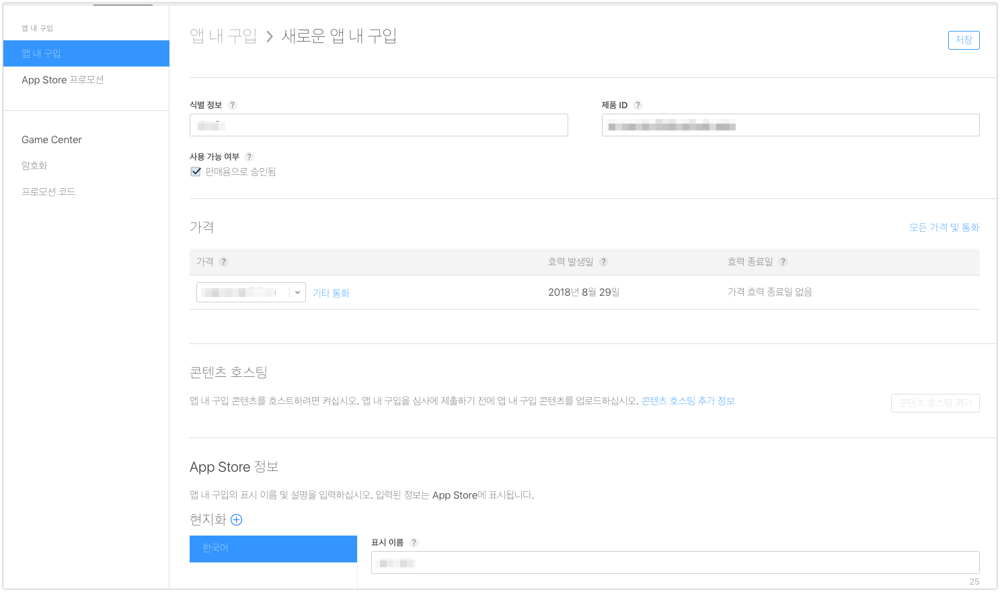

[iOS] In-App-Purchase 인앱구매 적용기
2018-08-29
-읽음
수익을 내보자
지금까지는 AdMob을 통해 광고 수익을 소소하게 벌고 있었는데요. 이번엔 인앱구매를 통해 수익모델을 붙여보려고 합니다.
보통 주로 무료앱에서는 광고 제거 버전을 인앱구매 상품으로 판매중입니다.
저도 한번 인앱구매로 광고제거 버전을 만들어 보려고 합니다.
앱 설정 변경하기
지금까지 Push 등 앱에 특별한 기능을 추가하기 위해서는 애플 개발자 센터에서 옵션 설정을 해왔습니다.
인앱구매도 마찬가지로 애플 개발자 센터에서 인앱구매 기능을 사용하겠다고 설정해야합니다.
앱의 설정을 변경하기 위해 애플 개발자 센터에서 앱 설정 페이지로 들어갑니다.
In-App Purchase 를 Enable로 만들어줍니다! 저는 왜때문인지 이미 되어있네요…
상품 등록하기
이제 앱에서 판매할 상품을 등록해야합니다. 상품 등록은 애플 개발자 센터가 아닌 아이튠스커넥트에서 진행합니다.
상품을 판매할 앱의 상세 페이지에서 앱 내 추가기능 탭을 선택합니다.
- 버튼을 눌러봅니다.
판매할 제품의 속성을 선택합니다.
- 소모품 : 말 그대로 소모품입니다. 유저가 필요할 때마다 구입하는 제품입니다.
- 비소모품 : 한번 구매하면 아이튠즈 기록을 통해 복원이 가능한 계정에 종속되는 제품입니다.
- 비자동 갱신구독 : 기간 제한을 둔 제품을 판매합니다. 유저는 기한이 끝나면 재구매 가능합니다.
이번 앱에서는 구매를 통해 광고제거 기능확장을 제공할 예정입니다. 비소모품을 선택합니다.

가격 정보 등 판매할 제품의 정보를 입력합니다.
심사 정보는 나중에 기입합니다.